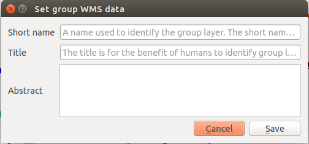

Docs for ‘QGIS testing’. Visit http://docs.qgis.org/2.14 for QGIS 2.14 docs and translations.
QGIS as OGC Data Server¶
- QGIS Server installation on Debian/Ubuntu
- Creating a WMS/WFS/WCS server from a QGIS project
- Server configuration and supported parameters
- Extra parameters supported by all request types
- Extra parameters supported by the WMS GetMap request
- Extra parameters supported by the WMS GetFeatureInfo request
- GetPrint request
- GetLegendGraphics request
- GetProjectSettings request
- DXF Export
- Extra parameters supported by the WFS GetFeature request
- QGIS Server logging
- Short name for layers, groups and project
- Connection to service file
- Add fonts to your linux server
- Environment variables
QGIS Server is an open source WMS 1.3, WFS 1.0.0 and WCS 1 1.1.1 implementation that, in addition, implements advanced cartographic features for thematic mapping. The QGIS Server is a FastCGI/CGI (Common Gateway Interface) application written in C++ that works together with a web server (e.g., Apache, Lighttpd). It has Python plugin support allowing for fast and efficient development and deployment of new features. The original development of QGIS Server was funded by the EU projects Orchestra, Sany and the city of Uster in Switzerland.
QGIS Server uses QGIS as back end for the GIS logic and for map rendering. Furthermore, the Qt library is used for graphics and for platform-independent C++ programming. In contrast to other WMS software, the QGIS Server uses cartographic rules as a configuration language, both for the server configuration and for the user-defined cartographic rules.
As QGIS desktop and QGIS Server use the same visualization libraries, the maps that are published on the web look the same as in desktop GIS.
In the following sections, we will provide a sample configuration to set up a QGIS Server on Debian/Ubuntu Linux. For user contributed installation instructions on other platforms or distributions, we recommend reading one of the following URLs:
- http://hub.qgis.org/projects/quantum-gis/wiki/QGIS_Server_Tutorial
- http://linfiniti.com/2010/08/qgis-mapserver-a-wms-server-for-the-masses/
- http://www.itopen.it/qgis-server-python-plugins-ubuntu-setup/
QGIS Server installation on Debian/Ubuntu¶
At this point, we will give a short and simple sample installation how-to for a minimal working configuration using Apache2 on Debian Squeeze (or with negligible variations on Ubuntu 14.04). Many other OSs provide packages for QGIS Server, too. If you have to build it all from source, please refer to the URLs above.
Firstly, add the following debian GIS repository:
$ cat /etc/apt/sources.list.d/debian-gis.list
deb http://qgis.org/debian trusty main
deb-src http://qgis.org/debian trusty main
$ # Add keys
$ sudo gpg --keyserver keyserver.ubuntu.com --recv-key 3FF5FFCAD71472C4
$ sudo gpg --export --armor 3FF5FFCAD71472C4 | sudo apt-key add -
$ # Update package list
$ sudo apt-get update && sudo apt-get upgrade
Now, install QGIS Server:
$ sudo apt-get install qgis-server python-qgis
Installation of a HelloWorld example plugin for testing the servers. You create a directory to hold server plugins. This will be specified in the virtual host configuration and passed on to the server through an environment variable:
$ sudo mkdir -p /opt/qgis-server/plugins
$ cd /opt/qgis-server/plugins
$ sudo wget https://github.com/elpaso/qgis-helloserver/archive/master.zip
$ # In case unzip was not installed before:
$ sudo apt-get install unzip
$ sudo unzip master.zip
$ sudo mv qgis-helloserver-master HelloServer
Install the Apache server in a separate virtual host listening on port 80. Enable the rewrite module to pass HTTP BASIC auth headers:
$ sudo a2enmod rewrite
$ cat /etc/apache2/conf-available/qgis-server-port.conf
Listen 80
$ sudo a2enconf qgis-server-port
This is the virtual host configuration, stored in /etc/apache2/sites-available/001-qgis-server.conf :
<VirtualHost *:80>
ServerAdmin webmaster@localhost
DocumentRoot /var/www/html
ErrorLog ${APACHE_LOG_DIR}/qgis-server-error.log
CustomLog ${APACHE_LOG_DIR}/qgis-server-access.log combined
# Longer timeout for WPS... default = 40
FcgidIOTimeout 120
FcgidInitialEnv LC_ALL "en_US.UTF-8"
FcgidInitialEnv PYTHONIOENCODING UTF-8
FcgidInitialEnv LANG "en_US.UTF-8"
FcgidInitialEnv QGIS_DEBUG 1
FcgidInitialEnv QGIS_SERVER_LOG_FILE /tmp/qgis-000.log
FcgidInitialEnv QGIS_SERVER_LOG_LEVEL 0
FcgidInitialEnv QGIS_PLUGINPATH "/opt/qgis-server/plugins"
# Needed for QGIS HelloServer plugin HTTP BASIC auth
<IfModule mod_fcgid.c>
RewriteEngine on
RewriteCond %{HTTP:Authorization} .
RewriteRule .* - [E=HTTP_AUTHORIZATION:%{HTTP:Authorization}]
</IfModule>
ScriptAlias /cgi-bin/ /usr/lib/cgi-bin/
<Directory "/usr/lib/cgi-bin">
AllowOverride All
Options +ExecCGI -MultiViews +FollowSymLinks
# for apache2 > 2.4
Require all granted
#Allow from all
</Directory>
</VirtualHost>
Now enable the virtual host and restart Apache:
$ sudo a2ensite 001-qgis-server
$ sudo service apache2 restart
Test the server with the HelloWorld plugin:
$ wget -q -O - "http://localhost/cgi-bin/qgis_mapserv.fcgi?SERVICE=HELLO"
HelloServer!
You can have a look at the default GetCapabilities of the QGIS server at: http://localhost/cgi-bin/qgis_mapserv.fcgi?SERVICE=WMS&VERSION=1.3.0&REQUEST=GetCapabilities
Tip
If you work with a feature that has many nodes then modifying and adding a new feature will fail. In this case it is possible to insert the following code into the 001-qgis-server.conf file:
<IfModule mod_fcgid.c>
FcgidMaxRequestLen 26214400
FcgidConnectTimeout 60
</IfModule>
Creating a WMS/WFS/WCS server from a QGIS project¶
To provide a new QGIS Server WMS, WFS or WCS, we have to create a QGIS project file with some data. Here, we use the ‘Alaska’ shapefile from the QGIS sample dataset. Define the colors and styles of the layers in QGIS and the project CRS, if not already defined.
Figure Server 2:
Definitions for a QGIS Server WMS/WFS/WCS project
Then, go to the OWS Server menu of the
Project ‣ Project Properties dialog and provide
some information about the OWS in the fields under
Service Capabilities.
This will appear in the GetCapabilities response of the WMS, WFS or WCS.
If you don’t check  Service capabilities,
QGIS Server will use the information given in the wms_metadata.xml file
located in the cgi-bin folder.
Service capabilities,
QGIS Server will use the information given in the wms_metadata.xml file
located in the cgi-bin folder.
Warning
If you’re using the QGIS project with styling based on SVG files using relative paths then you should know that the server considers the path relative to its qgis_mapserv.fcgi file (not to the qgs file). So, if you deploy a project on the server and the SVG files are not placed accordingly, the output images may not respect the Desktop styling. To ensure this doesn’t happen, you can simply copy the SVG files relative to the qgis_mapserv.fcgi. You can also create a symbolic link in the directory where the fcgi file resides that points to the directory containing the SVG files (on Linux/Unix).
WMS capabilities¶
In the WMS capabilities section, you can define
the extent advertised in the WMS GetCapabilities response by entering
the minimum and maximum X and Y values in the fields under
Advertised extent.
Clicking Use Current Canvas Extent sets these values to the
extent currently displayed in the QGIS map canvas.
By checking CRS restrictions, you can restrict
in which coordinate reference systems (CRS) QGIS Server will offer
to render maps.
Use the  button below to select those CRSs
from the Coordinate Reference System Selector, or click Used
to add the CRSs used in the QGIS project to the list.
button below to select those CRSs
from the Coordinate Reference System Selector, or click Used
to add the CRSs used in the QGIS project to the list.
If you have print composers defined in your project, they will be listed in the
GetProjectSettings response, and they can be used by the GetPrint request to
create prints, using one of the print composer layouts as a template.
This is a QGIS-specific extension to the WMS 1.3.0 specification.
If you want to exclude any print composer from being published by the WMS,
check Exclude composers and click the
button below.
Then, select a print composer from the Select print composer dialog
in order to add it to the excluded composers list.
If you want to exclude any layer or layer group from being published by the
WMS, check Exclude Layers and click the
button below.
This opens the Select restricted layers and groups dialog, which
allows you to choose the layers and groups that you don’t want to be published.
Use the Shift or Ctrl key if you want to select multiple entries.
You can receive requested GetFeatureInfo as plain text, XML and GML. Default is XML, text or GML format depends the output format chosen for the GetFeatureInfo request.
If you wish, you can check Add geometry to feature response.
This will include in the GetFeatureInfo response the geometries of the
features in a text format. If you want QGIS Server to advertise specific request URLs
in the WMS GetCapabilities response, enter the corresponding URL in the
Advertised URL field.
Furthermore, you can restrict the maximum size of the maps returned by the
GetMap request by entering the maximum width and height into the respective
fields under Maximums for GetMap request.
If one of your layers uses the Map Tip display (i.e. to show text using expressions) this will be listed inside the GetFeatureInfo output. If the layer uses a Value Map for one of its attributes, this information will also be shown in the GetFeatureInfo output.
QGIS supports the following requests for WMS service:
- GetCapabilities
- GetMap
- GetFeatureInfo
- GetLegendGraphic (SLD profile)
- DescribeLayer (SLD profile)
- GetStyles (custom QGIS profile)
WFS capabilities¶
In the WFS capabilities area you can select the layers you want to publish as WFS, and specify if they will allow update, insert and delete operations. If you enter a URL in the Advertised URL field of the WFS capabilities section, QGIS Server will advertise this specific URL in the WFS GetCapabilities response.
QGIS supports the following requests for WFS service:
- GetCapabilities
- DescribeFeatureType
- GetFeature
- Transaction
WCS capabilities¶
In the WCS capabilities area, you can select the layers that you want to publish as WCS. If you enter a URL in the Advertised URL field of the WCS capabilities section, QGIS Server will advertise this specific URL in the WCS GetCapabilities response.
Now, save the session in a project file alaska.qgs. To provide the project as a WMS/WFS, we create a new folder /usr/lib/cgi-bin/project with admin privileges and add the project file alaska.qgs and a copy of the qgis_mapserv.fcgi file - that’s all.
Now we test our project WMS, WFS and WCS. Add the WMS, WFS and WCS as described in Loading WMS/WMTS Layers, WFS and WFS-T Client and WCS Client to QGIS and load the data. The URL is:
http://localhost/cgi-bin/project/qgis_mapserv.fcgi
QGIS supports the following requests for WCS service:
- GetCapabilities
- DescribeCoverage
- GetCoverage
GetCapabilities Caching¶
In order to improve response time, QGIS Server caches the responses to the GetCapabilities requests. When such a request comes, QGIS Server is caching the response and marking the cache valid. At the same time, it watches if the project file changes. If the project is changed then the cache is marked as invalid and QGIS Server waits for a new request in order to recreate the cache.
Fine tuning your OWS¶
For vector layers, the Fields menu of the Layer ‣ Properties dialog allows you to define for each attribute if it will be published or not. By default, all the attributes are published by your WMS and WFS. If you don’t want a specific attribute to be published, uncheck the corresponding checkbox in the WMS or WFS column.
You can overlay watermarks over the maps produced by your WMS by adding text annotations or SVG annotations to the project file. See the Annotation Tools section in General Tools for instructions on creating annotations. For annotations to be displayed as watermarks on the WMS output, the Fixed map position check box in the Annotation text dialog must be unchecked. This can be accessed by double clicking the annotation while one of the annotation tools is active. For SVG annotations, you will need either to set the project to save absolute paths (in the General menu of the Project ‣ Project Properties dialog) or to manually modify the path to the SVG image so that it represents a valid relative path.
Server configuration and supported parameters¶
QGIS Server supports some vendor parameters and requests that greatly enhance the possibilities of customising its behavior. The following paragraphs list the vendor parameters and the environment variables supported by the server.
Extra parameters supported by all request types¶
FILE_NAME parameter: if set, the server response will be sent to the client as a file attachment with the specified file name.
MAP parameter: Similar to MapServer, the MAP parameter can be used to specify the path to the QGIS project file. You can specify an absolute path or a path relative to the location of the server executable (qgis_mapserv.fcgi). If not specified, QGIS Server searches for .qgs files in the directory where the server executable is located.
Example:
http://localhost/cgi-bin/qgis_mapserv.fcgi?\ REQUEST=GetMap&MAP=/home/qgis/mymap.qgs&...
Note
You can define a QGIS_PROJECT_FILE as an environment variable to tell the server executable where to find the QGIS project file. This variable will be the location where QGIS will look for the project file. If not defined it will use the MAP parameter in the request and finally look at the server executable directory.
Extra parameters supported by the WMS GetMap request¶
In the WMS GetMap request, QGIS Server accepts a couple of extra parameters in addition to the standard parameters according to the OCG WMS 1.3.0 specification:
DPI parameter: The DPI parameter can be used to specify the requested output resolution.
Example:
http://localhost/cgi-bin/qgis_mapserv.fcgi?REQUEST=GetMap&DPI=300&...
OPACITIES parameter: Opacity can be set on layer or group level. Allowed values range from 0 (fully transparent) to 255 (fully opaque).
Example:
http://localhost/cgi-bin/qgis_mapserv.fcgi?\ REQUEST=GetMap&LAYERS=mylayer1,mylayer2&OPACITIES=125,200&...
- FILTER parameter: (Available in QGIS 1.8 and above). Subsets of layers
can be selected with the FILTER parameter. Syntax is basically the same as for the QGIS subset string. However, there are some restrictions to avoid SQL injections into databases via QGIS server:
Text strings need to be enclosed with quotes (single quotes for strings, double quotes for attributes) A space between each word / special character is mandatory. Allowed Keywords and special characters are ‘AND’,’OR’,’IN’,’=’,’<’,’>=’, ‘>’,’>=’,’!=*,’(‘,’)’. Semicolons in string expressions are not allowed
Example:
http://myserver.com/cgi/qgis_mapserv.fcgi?REQUEST=GetMap&LAYERS=mylayer1,mylayer2&FILTER=mylayer1:"OBJECTID" = 3;mylayer2:'text' = 'blabla'&....
Note
It is possible to make attribute searches via GetFeatureInfo and omit the X/Y parameter if a FILTER is there. QGIS server then returns info about the matching features and generates a combined bounding box in the xml output.
- SELECTION parameter: (Available in QGIS 1.8 and above)
Vector features can be selected by passing comma separated lists with feature ids in GetMap and GetPrint.
Example:
http://myserver.com/cgi/qgis_mapserv.fcgi?REQUEST=GetMap&LAYERS=mylayer1,mylayer2&SELECTION=mylayer1:3,6,9;mylayer2:1,5,6&...
Extra parameters supported by the WMS GetFeatureInfo request¶
QGIS Server WMS GetFeatureInfo requests supports the following extra optional parameters to define the tolerance for point, line and polygon layers:
- FI_POINT_TOLERANCE parameter: Tolerance for point layers GetFeatureInfo request, in pixels.
- FI_LINE_TOLERANCE parameter: Tolerance for linestring layers GetFeatureInfo request, in pixels.
- FI_POLYGON_TOLERANCE parameter: Tolerance for polygon layers GetFeatureInfo request, in pixels.
GetPrint request¶
QGIS server has the capability to create print composer output in pdf or pixel format. Print composer windows in the published project are used as templates. In the GetPrint request, the client has the possibility to specify parameters of the contained composer maps and labels.
Example:
The published project has two composer maps. In the GetProjectSettings response, they are listed as possible print templates:
<WMS_Capabilities>
...
<ComposerTemplates xsi:type="wms:_ExtendedCapabilities">
<ComposerTemplate width="297" height="210" name="Druckzusammenstellung 1">
<ComposerMap width="171" height="133" name="map0"/>
<ComposerMap width="49" height="46" name="map1"/></ComposerTemplate>
</ComposerTemplates>
...
</WMS_Capabilities>
The client has now the information to request a print output:
http://myserver.com/cgi/qgis_mapserv.fcgi?...&REQUEST=GetPrint&TEMPLATE=Druckzusammenstellung 1&map0:EXTENT=xmin,ymin,xmax,ymax&map0:ROTATION=45&FORMAT=pdf&DPI=300
Parameters in the GetPrint request are:
- <map_id>:EXTENT gives the extent for a composer map as xmin,ymin,xmax,ymax.
- <map_id>:ROTATION map rotation in degrees
- <map_id>:GRID_INTERVAL_X, <map_id>:GRID_INTERVAL_Y Grid line density for a composer map in x- and y-direction
- <map_id>:SCALE Sets a mapscale to a composer map. This is useful to ensure scale based visibility of layers and labels even if client and server may have different algorithms to calculate the scale denominator
- <map_id>:LAYERS, <map_id>:STYLES possibility to give layer and styles list for composer map (useful in case of overview maps which should have only a subset of layers)
GetLegendGraphics request¶
Several additional parameters are available to change the size of the legend elements:
- BOXSPACE space between legend frame and content (mm)
- LAYERSPACE versical space between layers (mm)
- LAYERTITLESPACE vertical space between layer title and items following (mm)
- SYMBOLSPACE vertical space between symbol and item following (mm)
- ICONLABELSPACE horizontal space between symbol and label text (mm)
- SYMBOLWIDTH width of the symbol preview (mm)
- SYMBOLHEIGHT height of the symbol preview (mm)
These parameters change the font properties for layer titles and item labels:
- LAYERFONTFAMILY / ITEMFONTFAMILY font family for layer title / item text
- LAYERFONTBOLD / ITEMFONTBOLD ‘TRUE’ to use a bold font
- LAYERFONTSIZE / ITEMFONTSIZE Font size in point
- LAYERFONTITALIC / ITEMFONTITALIC ‘TRUE’ to use italic font
- LAYERFONTCOLOR / ITEMFONTCOLOR Hex color code (e.g. #FF0000 for red)
- LAYERTITLE / RULELABEL (from QGIS 2.4) set them to ‘FALSE’ to get only the legend graphics without labels
Contest based legend. These parameters let the client request a legend showing only the symbols for the features falling into the requested area:
- BBOX the geographical area for which the legend should be built
- CRS / SRS the coordinate reference system adopted to define the BBOX coordinates
- WIDTH / HEIGHT if set these should match those defined for the GetMap request, to let QGIS Server scale symbols according to the map view image size.
Contest based legend features are based on the UMN MapServer implementation:
GetProjectSettings request¶
This request type works similar to GetCapabilities, but it is more specific to QGIS Server and allows a client to read additional information which is not available in the GetCapabilities output:
- initial visibility of layers
- information about vector attributes and their edit types
- information about layer order and drawing order
- list of layers published in WFS
DXF Export¶
It is possible to export layers in the DXF format using the GetMap Request. Only layers that have read access in the WFS service are exported in the DXF format. Here is a valid REQUEST and a documentation of the available parameters:
http://your.server.address/wms/liegenschaftsentwaesserung/abwasser_werkplan?SERVICE=WMS&VERSION=1.3.0&REQUEST=GetMap&LAYERS=Haltungen,Normschacht,Spezialbauwerke&STYLES=&CRS=EPSG%3A21781&BBOX=696136.28844801,245797.12108743,696318.91114315,245939.25832905&WIDTH=1042&HEIGHT=811&FORMAT=application/dxf&FORMAT_OPTIONS=MODE:SYMBOLLAYERSYMBOLOGY;SCALE:250&FILE_NAME=werkplan_abwasser.dxf
Parameters:
- FORMAT=application/dxf
- FILE_NAME=yoursuggested_file_name_for_download.dxf
- FORMAT_OPTIONS=see options below, key:value pairs separated by Semicolon
FORMAT_OPTIONS Parameters:
- SCALE:scale to be used for symbology rules, filters and styles (not an actual scaling of the data - data remains in the original scale).
- MODE:NOSYMBOLOGY|FEATURESYMBOLOGY|SYMBOLLAYERSYMBOLOGY corresponds to the three export options offered in the QGIS Desktop DXF export dialog.
- LAYERSATTRIBUTES:yourcolumn_with_values_to_be_used_for_dxf_layernames - if not specified, the original QGIS layer names are used.
- USE_TITLE_AS_LAYERNAME if enabled, the title of the layer will be used as layer name.
Extra parameters supported by the WFS GetFeature request¶
In the WFS GetFeature request, QGIS Server accepts two extra parameters in addition to the standard parameters according to the OCG WFS 1.1.0 specification:
- GeometryName parameter: this parameter can be used to get the extent or the centroid as the geometry or no geometry if none if used (ie attribute only). Allowed values are extent, centroid or none.
- StartIndex parameter: STARTINDEX is standard in WFS 2.0, but it’s an extension for WFS 1.0 which is the only version implemented in QGIS Server. STARTINDEX can be used to skip some features in the result set and in combination with MAXFEATURES will provide for the ability to use WFS GetFeature to page through results. Note that STARTINDEX=0 means start with the first feature, skipping none.
QGIS Server logging¶
To log requests sent to the server, set the following environment variables:
QGIS_SERVER_LOG_FILE: Specify path and filename. Make sure that the server has proper permissions for writing to file. File should be created automatically, just send some requests to server. If it’s not there, check permissions.
QGIS_SERVER_LOG_LEVEL: Specify desired log level. Available values are:
- 0 INFO (log all requests),
- 1 WARNING,
- 2 CRITICAL (log just critical errors, suitable for production purposes).
Example:
SetEnv QGIS_SERVER_LOG_FILE /var/tmp/qgislog.txt SetEnv QGIS_SERVER_LOG_LEVEL 0
Note
- When using Fcgid module use FcgidInitialEnv instead of SetEnv!
- Server logging is also enabled if executable is compiled in release mode.
Short name for layers, groups and project¶
A number of elements have both a <Name> and a <Title>. The Name is a text string used for machine-to-machine communication while the Title is for the benefit of humans.
For example, a dataset might have the descriptive Title “Maximum Atmospheric Temperature” and be requested using the abbreviated Name “ATMAX”. User can already set title for layers, groups and project.
OWS name is based on the name used in layer tree. This name is more a label for humans than a name for machine-to-machine communication.
QGIS Server supports:
short name line edits to layers properties You can change this by right clicking on a layer, choose Properties ‣ Metadata tab ‣ Description ‣ Short name.
WMS data dialog to layer tree group (short name, title, abstract)
By right clicking on a layer group and selecting the Set Group WMS data option you will get:
Figure set group wms data:
short name line edits to project properties - add a regexp validator "^[A-Za-z][A-Za-z0-9\._-]*" to short name line edit accessible through a static method
add a regexp validator "^[A-Za-z][A-Za-z0-9\._-]*" to short name line edit accessible through a static method
You can choose a short name for the project root by going to Project properties ‣ OWS Server ‣ Service capabilities ‣ Short name.
add a TreeName element in the fullProjectSettings
If a short name has been set for layers, groups or project it is used by QGIS Sever as the layer name.
Connection to service file¶
In order to make apache aware of the PostgreSQL service file (see the Service connection file section) you need to make your *.conf file look like:
SetEnv PGSERVICEFILE /home/web/.pg_service.conf
<Directory "/home/web/apps2/bin/">
AllowOverride None
.....
Add fonts to your linux server¶
Keep in mind that you may use QGIS projects that point to fonts that may not exist by default on other machines. This means that if you share the project, it may look different on other machines (if the fonts don’t exist on the target machine).
In order to ensure this does not happen you just need to install the missing fonts on the target machine. Doing this on desktop systems is usually trivial (double clicking the fonts).
For linux, if you don’t have a desktop environment installed (or you prefer the command line) you need to:
On Debian based systems:
sudo su mkdir -p /usr/local/share/fonts/truetype/myfonts && cd /usr/local/share/fonts/truetype/myfonts # copy the fonts from their location cp /fonts_location/* . chown root * cd .. && fc-cache -f -v
On Fedora based systems:
sudo su mkdir /usr/share/fonts/myfonts && cd /usr/share/fonts/myfonts # copy the fonts from their location cp /fonts_location/* . chown root * cd .. && fc-cache -f -v
Environment variables¶
You can configure some aspects of QGIS server by setting environment variables. For example, to set QGIS server on Apache to use /path/to/config/QGIS/QGIS2.ini settings file, add to Apache config:
SetEnv QGIS_OPTIONS_PATH "/path/to/config/"
or, if using fcgi:
FcgidInitialEnv QGIS_OPTIONS_PATH "/path/to/config/"
This is a list of the variables supported by QGIS server:
- QGIS_OPTIONS_PATH: Specifies the path to the directory with settings. It works the same way as QGIS application –optionspath option. It is looking for settings file in <QGIS_OPTIONS_PATH>/QGIS/QGIS2.ini.
- QUERY_STRING: The query string, normally passed by the web server. This variable can be useful while testing QGIS server binary from the command line.
- QGIS_PROJECT_FILE: the .qgs project file, normally passed as a parameter in the query string, you can also set it as an environment variable (for example by using mod_rewrite Apache module).
- QGIS_SERVER_LOG_FILE: Specify path and filename. Make sure that server has proper permissions for writing to file. File should be created automatically, just send some requests to server. If it’s not there, check permissions.
- QGIS_SERVER_LOG_LEVEL: Specify desired log level. See QGIS Server logging
- MAX_CACHE_LAYERS: Specify the maximum number of cached layers (default: 100).
- DISPLAY: This is used to pass (fake) X server display number (needed on Unix-like systems).
- QGIS_PLUGINPATH: Useful if you are using Python plugins for the server, this sets the folder that is searched for Python plugins.